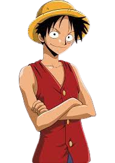

Monkey D. Luffy
Conhecendo o personagem
Luffy é capitão dos Piratas do Chapéu de Palha e o protagonista de One Piece. Ele começou sua viagem como um novato dentro do East Blue e ganhou uma recompensa de 30.000.000 berries após derrotar os piratas mais fortes de sua região. O grande objetivo de Luffy é chegar até o One Piece para virar o próximo Rei dos Piratas, mas, para realizar seu sonho, ele tem que superar piratas monstruosos como Kaido, Barba Negra e Shanks. Sua Akuma no Mi é a Gomu Gomu no Mi que faz dele o homem borracha e suas habilidades ficaram ainda mais fortes depois de aprender a usar Haki com Silver Rayleigh. Luffy tem uma personalidade boba e infantil, mas sabe se impor como um capitão para liderar o grupo. Depois de derrotar o Kaido, Luffy ganhou o título de Yonkou e sua recompensa subiu para 3.000.000.000 de berries.